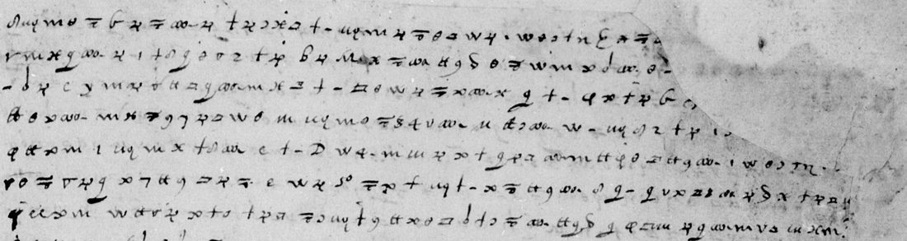
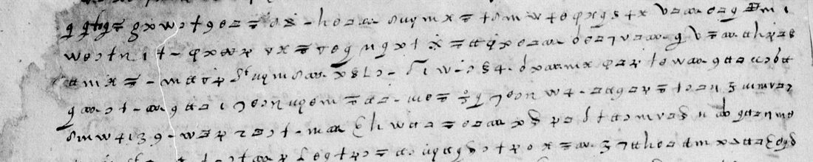
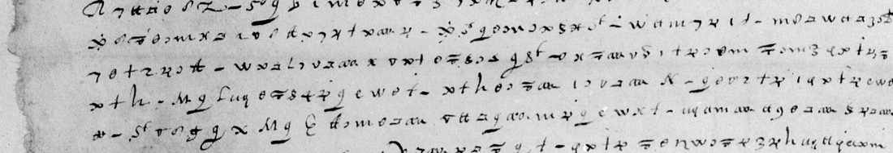

At a glanceKnown key applied · partial (69% of the cipher)
- The letter
- A ciphered letter from Reims, 19 June 1589, writer unknown, about the Reims chapter’s election of Brulart and Frison after the murder of Cardinal Louis de Guise.
- Where
- BnF fr. 20974, a volume of Guise ciphers of 1556; the catalogue date of 1556 came from a key pasted on page 4. Three pages of signs, about 3,900 signs.
- The cipher
- The Nevers–Piles cipher, a homophonic alphabet with nulls and a small set of code signs.
- How it was read
- Satoshi Tomokiyo’s partial table, extended with code signs found in the letter and by aligning BnF fr. 4715 f. 2, a deciphered 1586 letter in the same cipher. Norbert Biermann had found the cipher in 2021.
- What it says
- The chapter chose a postulation of two men, Brulart (who consented en plourant) and the dean Frison, now in Rome. It also covers Mayenne’s delays and the duc d’Elbeuf’s ransom of 50,000 écus.
- Still open
- The torn right edge of page 1, the left margin of page 2, a stain on page 3, about 25 single signs, one code sign, and about 80 words no candidate fits.
- Credit
- Satoshi Tomokiyo (the key); Norbert Biermann (the cipher system, 2021).
01 The document and where the 1556 date came from
BnF fr. 20974 is titled Clefs de la correspondance chiffrée de François, duc de Guise, avec quelques lettres de lui (1556) (Gallica btv1b9062131g). Tomokiyo’s catalogue of the volume numbers the letter no. 1 (pp. 1–4) and lists no contemporary decipherment for it. Pages 1–3 are forty, forty and thirteen lines of signs with no clear text at all. Page 3 is bound upside down and its lower half is blank. Page 4 is the letter’s blank verso. The lower half has a key sheet pasted onto it, dated 1556 and headed for the general d’Albany (Tomokiyo’s no. 2): an alphabet, nulls, and code signs for the Pope, the Emperor, Ferrara, Venice and Parma. That key is the source of the catalogue’s year. Its signs are not the letter’s.

02 The cipher and the key
Tomokiyo reconstructed the Nevers–Piles alphabet from Jean de Piles’s letters of 1586 to the Duke of Nevers in BnF fr. 3612, which is not digitised. His table gives one or more signs for each letter from a to z, three nulls, and a few codes: de, et, que, qui, quil, luy, les, des, Mr. Decrypted with the table, this letter at first gave mostly nonsense. The cause was the transcription: closed and open boxes, plain and hooked v, the cross × and the lying loop ∞ are easy to confuse, and each pair has different values. After two transcription passes and six rounds of checking against the images, the key used here has one value per glyph, as in Tomokiyo’s table. It adds code signs attested by their contexts:
| Sign | Value | Evidence |
|---|---|---|
| ʒ followed by Ձ | cardinal | “cardinal de lorraine”, “cardinal de peleue”, “cardinal alanus” |
| ʒ alone | le, du, d | “lung le grand”, “le doien”, “le duc de parme”, “du dix neufiesme” |
| ce ligature | pour (and o) | “pour empescher”, “pour cela”, “pour la presenter” |
| b b | leur | “leur sainte intention”, “leurs peines”, “leur uolonte” |
| ꝺ with raised o | faire | “la faire tenir a Rome”, “a uous faire seruice” (also in fr. 4715) |
| large hooked b | ie | “ie luy nommai”, “ie uous suplie” (6 of 6 in fr. 4715) |
| dotted × | vous (or null) | “uous asseurer”, “depuis uous scaues” (always vous in fr. 4715) |
| dotted cursive M | lettre | “le contenu de la lettre”, “la lettre signe”, “une semblable lettre pour fortifier” |
| boxed cross ⊞ | parle | twice in fr. 4715 under “parle”; here once plausibly (“ouy parler”), once not |
The sibling is BnF fr. 4715 f. 2: the Cardinal de Guise to Nevers, Soissons, 6 October 1586, in the same cipher, with its decipherment written above every line. All 29 of its lines were aligned here, about 1,050 sign–value pairs. It confirms Tomokiyo’s values, and in that hand the sigma-like ꝺ is mostly t, not a. The letter at fr. 3413 no. 62, from Cardinal Pellevé’s household in Rome to Jean de Piles in August 1589, uses the same alphabet.
03 The decrypted text
The text is given as the signs spell it, in the writer’s spelling (u for v, i for j, no accents). ? marks a word whose signs are present but unresolved, […] paper that is lost, and * a word accepted with a sign against the key (grade C). A vertical bar marks the line ends of the manuscript. There are no word divisions in the cipher; the spaces are editorial.
Page 1: the chapter’s letter to the Pope
apres a este leu en la presence de ceulx qui est[oient …] | arreste de l’assemblee a lettre estoit escript de a[…] | […]ape pour luy remonstrer la necessite que la uile a pour […] | feit residence et preschat et fut capable de u[…] | uoir de prelat, pour la descharge il s’en trouueroit de ceulx de | mesmes idoines de ce, s’il plaisoit a sa Sainctete l’en pour|uoir comme ilz l’en suplioient, plustost que ung estranger. | Uous scauraie pas representer le contenu de la lettre au urai, mais | peu de desus que uous en pouez imaginer le subiect … | qu’il i eut personne de nomme la lettre signe. Il proposa deux choses, | une le moien de la faire tenir a Rome ? et fut prie le capitaine Tr|on de l’enuoier a son frere pour la presenter, de quoi ils s’excusent, | disant que cela ? trop de soupcon a leur maison et a son nom, | et mesme que pour les choses passees … qu’il failloit moien | d’obtenir du chapitre une semblable lettre pour fortifier …
The rest of page 1 loses its right edge from line 16 to line 31. What survives tells how the writer took the matter to Madame de Sainct Pierre (the abbess of Saint-Pierre-les-Dames at Reims, Renée de Lorraine), and asked that it be kept aussi secret. It goes on: “les anglois uenus de Rome et qui estoient lors … disent que la matiere a este seulement p[re]conise[e], mais ils se trompent … qui n’est poinct subiet a preconisation”. The page closes: “il semble au langage de ? Bardin que son maistre n’ait pas … du contentement qu’il esperoit … il ne fault pas faire demonstration … tost response, et ne se ueult ioindre”. Bardin is the Duke of Lorraine’s agent in Paris, the one quoted in the orbais letter.
Page 2: the postulation
… pendant que i’estoie enc|ores a Rome il praticqua ici au chapitre une election ou po|stulation de deux personages et deux chanoines, l’ung le grand | archidiacre Brulart qui i consentit en plourant et a son gre, | come il m’a dit; l’aultre esleu son postule est le doien Frison qui est | maintenant a Rome … du cardinal de Lorraine ? fut porteurs de l’acte de | postulation a Rome … si tost il i est arriue il | ne m’en ? mot … lors cardinal de Peleue, le commandeur de Diou pour | qui s’il a entendu de cela ou s’il en a charge de uous ou de Mr de Maine; et il | a ? que cela a este a leurs intentions. Il fut fort aise | d’empescher l’execution … en feit le sr Frison … | … remise de Mr cardinal Alanus qui est du ? deuotion a la pro[…]
… pour ce coup la le commandeur n’en a de la point pour estre … Frison depuis, uous scaues ce qui s’est passe … comme enfin cardinal de Pel[leue] … este propose a la congregation ? et uous l’aues eu | [ag]reable a condition qu’il se contenteroit du reuenu de l’arche|[ue]sche ancien ? toucher a l’abaie de saint Remi qui demeureroit | [en]tiere a uostre uille. Les choses sont* demoures ainsi iusques a pres|ent; Mr ne pensoit pas qu’il songeast plus aux premieres prati|ques, bien que ie puis, puis que ie suis ici … mais ie ne uoioie pas beaucoup d’aparence de remetre cela | en auant, et pour ce pensois ie que ceulx qui m’en aloient ? pensent tous | ? a enuie ou ialousies pour croire que la chose peust reusc|ir. Il i a quatre ou cinq de [la] Lique s’estant ? assemble de uille pour | aduiser des commodite* et secours … ceulx de Prouins | … ne s’estoient peu trop ? du grand archidiacre | ni du uidame Robilard qui est mon hoste …

Page 3: the armies, the date, and a postscript
? a l’armee … qu’il tient estre seure et asseure… | … de dix huict mil lansquenetz et huict mil reistres et de | […]es, dont une qui se doit aler au pais bas pour empescher le duc de Parme, | et du reste ici il est seur de metre luy mesmes a leuer ? pais a|pres qu’il aura retires ce qu’il aura peu … qu’il est | infiniment mal content des longueurs de Mr de Maine et du peu d’ordre | qu’il donera a faire … De Reims du dix neufiesme de iuin. Et ie uous suplie | uous asseurer de ma fidelite a uous faire seruice.
Il accorde de la rancon du duc | d’Elbeuf a cinquante mil escus, que ? ? de leuer sur les uiles. | Il i a Mrs depesches* pour cela; il i eust deuant qu’il assemble de uille pour ce|la. Il m’a dict que les Mrs qui ourent monstre que pour cela portoient cent | cinquante mil escus. I’entens que la uille s’excuse de y pouoir | contribuer.

04 Date, writer and addressee
Date. The letter gives only “de Reims du dix neufiesme de iuin”. The year follows from its content. The see of Reims fell vacant with the murder of Cardinal Louis de Guise at Blois on 24 December 1588, and the duc d’Elbeuf, whose ransom is being agreed, was taken at Blois on the same day and held at Loches from March 1589. The dean Frison is “maintenant a Rome” with the act of postulation. In the orbais letter, written in Rome on 23 August 1589 by Cardinal Pellevé’s secretary to Jean de Piles, Rome “depeschera … dedans deux jours le doien”. So the letter is of 19 June 1589. Pellevé himself was named to Reims only on 10 May 1591.
Writer. The writer had been in Rome shortly before (“pendant que i’estoie encores a Rome”). He writes from Reims, lodges with the vidame Robilard, and uses the cipher of Jean de Piles, abbé d’Orbais, who was the League’s envoy in Rome earlier in 1589 and whose abbey lies near Reims. Piles is the likely writer, but the letter is not signed.
Addressee. The addressee is not named. He had approved the postulation (“uous l’aues eu agreable a condition qu’il se contenteroit du reuenu de l’archeuesche”) and is distinct from Mayenne and from the Cardinal de Pellevé, both named in the third person. He is probably in Rome.
05 How it was decrypted
The three pages were fetched from DECODE and transcribed sign by sign into ASCII labels, 93 lines. Page 1 was done by hand at twice the scan size. Pages 2 and 3 were done by two agents at 1.5–3×, and page 3 was transcribed turned upright.
A free homophonic annealing under a French 5-gram model failed: the text collapsed into e and s. A decoder that allowed each sign a small set of values, then a word-level decoder with a 30,000-word lexicon of sixteenth-century letters that re-estimated those sets, brought out the content: chapitre, chanoines, archidiacre Brulart, postulation, lansquenetz, Parme, Elbeuf.
The decryption itself was done line by line against the images in six rounds. Each word was checked against the signs by an aligner, which measures the fraction of signs that agree with the key (measure.py).
Two decoding figures are reported; neither is a reading figure (see the Extent above). Sense counts every sign inside a real word or a declared null: 3,600 of 3,920, 91.8%. Strict counts only signs that agree with the key: 3,484, 88.9%. The difference is the writer’s slips and doubtful glyphs, accepted from context.
06 What remains uncertain
- Re-measured 5 October 2026. 3,600 of 3,920 signs give sense (91.8%) with key version 8, which applies the boxed cross ⊞ = parle at page 1 line 21 (ouy parler). The Gallica microfilm (btv1b9062131g) was fetched at full resolution and every unread line re-cut at native size: its rare-sign strokes are no clearer than DECODE’s, and none of the candidate corrections on t1.16, t1.39 and t2.2 turns an unread word into French. The remaining open words of two or more signs (about 80) need the manuscript itself.
- Lost paper (illegible): the right edge of page 1 from line 1 to 4 and 16 to 31, and the left margin of page 2 on lines 1–2, 15–28 and 39–40 (about a fifth of the line). These signs are not counted in the 3,920. An ink blot on page 3, line 2, hides one word, perhaps armees.
- Single signs (too short): about 25 isolated signs in running text that the sentence does not need, for example page 1 line 18 (ʒ), line 35, line 38, and page 3 line 4 (the barred Z).
- Codes: the boxed cross ⊞ before Bardin (p. 1 l. 36), probably a title. A barred Z and an 8 with a raised t on page 3 have no attested value.
- Open words: about 80 words of two or more signs, with no candidate that fits both the signs and the sentence. The worst passages are page 1 lines 16 and 22–26 (Madame de Sainct Pierre’s reply, next to the tear), page 2 lines 2–3, 13–16 and 39, and page 3 lines 1, 5 and 9.
- Doubtful readings (grade C): capitaine Tron (p. 1 l. 11–12, a name decrypted from the key alone); en uerite (p. 2 l. 2); sont (l. 28); commodite (l. 35); depesches (p. 3 l. 10); de Lique (p. 2 l. 34); the year 1589, inferred as above.
The transcription, the key files, the decrypted text and the alignment tools are in the repository folder. So is the aligned sibling fr4715_aligned.txt, which also serves the orbais letter.
Full texts
The transcription and the decryption of every document on this page, so that the reading can be used and checked. Short files are shown here; all are in the repository.
Letter from Reims, 19 June [1589], BnF fr. 20974 pp. 1-3 (DECODE R2276): the lines that read (p. 1 ll. 1-15, 27-37; p. 2 ll. 4-12, 22-35; p. 3) read in part
Written from Reims, probably by Jean de Piles, abbé d'Orbais: while he was still in Rome the chapter of Reims made an election or postulation for the archbishopric, of the grand archdeacon Brulart (who consented in tears) and of the dean Frison, now in Rome with the act of postulation. It names the Cardinal de Lorraine, Cardinal de Pellevé, Cardinal Allen, Mayenne, the abbey of Saint-Remi, 18,000 lansquenets and 8,000 reiters for the Low Countries against Parma, and Elbeuf's ransom agreed at 50,000 écus. Read in part; '?' marks unread words.
Builds coherent sentences, but under the read bar of 95% of words read as sense (92% here); the holes are marked in the reading.
Transcription
# page 1, re-transcribed 1: d P m o S b z S A z t z c X R t - P m z S o R w z 1 w o c t n E X S A ... 2: v m X g A z 1 t d g o v 2 t z b z Ml X S A T 9 J o S w m Q 0 A 1 o - ... 3: - 0 z C y m z V T R g A m X H t - R o w z S Q A X G t - f Q t z b C ... 4: F o Q A m X S 9 7 z R w o m P m o S 8 4 v A n F c A w - P d 2 t z 1 c ... 5: f T Q m 1 P m X t d A C t - D w 4 - m u z Q t g z R A m T f o H T 9 A 1 w o c t n 1 ... 6: v o S v z g Q 7 T 9 H z S 1 e w z s S Q t P t - Q S T g A d G - G v Q R 8 A z d Y t z R P 7: f e Q m w T V z Q t c t z R S c P t 9 T Q o R 0 t c S A T g J G f R u z g A m v R u c m 8: Y G w - c m d h o 0 - S m X P m z g X R A X m 3 w T R A z R c 1 t - Ml - c f m - h v d 9 S 9: P o c 1 7 o S c G Y z R P T f o R Q v - u g R X m 3 S c 2 Q o w A b H - h P T g R A G u 10: K h o c A P z m S T R z 1 R T V z t - Ml g Q u R z s P m T d T S - 7 o c n w 4 T S o g 11: R z 3 V T h o R 1 t - O A z R Q m d H T V z t n F c A P m h z 3 w - d Q A d 9 R z A m 12: T R 1 t z H c T h o m d S T R g m X H z C t - P m o G z R d X H 1 L c T h Q t g z n w c S 13: 7 Q S d H A G w o t - V T Q A A m T 0 1 S T c 0 w T H s b b V v Q S T R n d g T R T v 14: m z v X S V o G e x w t T G o S d v S z G F - c t A f F c A K F - Q t e Q A V T h o 15: 7 T 2 A o H Q m 3 f w 4 d P Q A m z f H X S o v 2 t - 2 l z Ml e F T m A Q F f z 16: w X L c o g A X f H m L w 4 v R T g R z S E g z A m T z - t d T c A P m h w - ... 17: J T A z Q t b X S A z Q R g A m c Q A 1 7 z v d R 3 X m K o z c S ... 18: w z G 1 S Q m T g o H A 3 c w 4 - P Q A m X n K 3 R - P Q T R A ... 19: d T c y Q R w T R A g R d R A L c 1 w z V n Q c u o - s K z S A T 3 ... 20: - v d 7 v v z 1 G - Q R A P Q o m Q X w T v z I F o Q S - P m o G ... 21: c Q S o g Q o t z H X H b P T Q R A T c h N m o T z v d S ... 22: Q t - F T m A 1 J X v z S R X I y R F v - s 1 E z t 4 3 P T c m o ... 23: d G z R Q R F T m v X m 3 t z R 1 v - 9 R w T v z o l z - V 1 7 3 ... 24: R e v z o E y h g % o G Q 8 Q w c t - m Q A z o f T c t v R G 1 A ... 25: 3 C R X t z L g 0 A v 2 Q A - v R G n b b G - Q R d z Q R A o R d g T R n ... 26: 2 t - S v T g A b b m o v T R g A m v R D G A v v T g h b L X - P m T ... 27: A m o G w 4 T S o g Q t o - v Y m z R A G w o t - X S A T g J S w z c 1 P o ... 28: 0 3 m T Q A f - v d 9 S t - g c P t s v R A 1 3 A o R Q m d c S s G o w H z A 1 ... 29: 2 t z 1 v T R 7 X 2 c e Q m 1 Y 2 z P m X S o R A X H t 4 Q S A T g m X K R z G A 2 z S T Q 3 ... 30: 1 P c 2 t 9 X m v - 9 S P m z R 7 m X u d m 7 z G S T c 2 o v v Q R 8 o t - R z G z A o R d ... 31: c S T c t A m X l o g S - R u t T s S f o R c R 1 m T V z n E s z S A T g o R s t T m S G 3 d ... 32: g o R S X R F c A P m T f z c 3 Q S z R A G t - v v A Q o H z b o G A X S o c t z v o R A P ... 33: w T H Q S z v - 9 S Q t o G z A m T v P X R A o l z T c A P m T d e S z d l v v T g z - 34: v o G E H o S A P T 9 H e A S c 2 Q o A d P m o w T R g S d A g T R d Q R G h - m Q c 1 m 35: 9 o R A Q t R A - m 3 n H h P o m 7 H T g o R A G b b g P o Q R X S Q t S c T Q A 3 b - o w T c 36: R d Q S A m z b b Y f T t e R A z Q t G o v 2 t z d 3 t - R u d u z 1 N 2 - m 7 Q R G g T R v - 9 S 37: m X R - h A d - S 1 Y % 3 w T R A o R D z v X R A K X G P X m T g A L b G y 3 z 2 f Q o 0 v X t 38: F - c t A 0 - S O 1 v T R g A m v d g T R Q t v d Y G x H T f o l z S 1 P t - m z R z E P - y A X T z 39: f o A c S Q P c 2 t Q z u G S T R v d Q g A m X S A D S Q 3 D 1 v v Q R ... d 3 4 o 40: A T S d Y m X G P T R S z n R X G z f o c t A f T Q R 7 m z u o R d
Transcription
# page 2, re-transcribed 1: ... P o Q R z T c X d T c m f o ^ X S A m z 7 c 7 Q g w T c m S G V X F - Q g 2: ... v - M 7 c - z v o R z E S o F - Q S T 9 A z R b X f Q A z S d w 4 X 0 L h - A T R m 8 o v y 3: g g t T G S E Y w c t 9 o H S d Y - h o H A d P m X S t d m w t o f X g s t x V H A o H g K m 1 4: w o c t n 1 t - f Q l z V X S V o G u g Q t Y S T f Q o R A 0 o R 7 v H A G V S A F h z H o 5: ? F m X S - W T V z s t P m d A Q 8 L c - s w - c 8 4 - d Q A m X f R z z t o w A g T R e c d T 6: g A c t - A g T R 1 7 o c n P o m S F H - m o S % J 7 o c n w 4 - R T g R z S t c R u 1 3 m m v R 7 7: d m w 4 1 3 9 - w H z 2 H c t - m A E h w T R S o R A Q J z H d t T c m v H J n q g T R u m o 8: w e V z s t V - 3 t - c t A z L o g t z c S T c P T g J c t z 0 X S A 3 7 T h o R F m Q ^ T R E o g d 9: V v Q R A o R d R A d H T v z 7 3 Z 1 l T m - 9 H X 3 h F c A P T m J x c S 1 t d w A z 1 10: P T g A c t - A g T c - W T V z G V L w T c m X S Q A m S J h s 9 2 g A - m Q c z f Q t 11: R z V o R G - V T A V R H G t T m S 3 Z 1 P o l z c X U 3 w T V - R 7 z o m 1 7 h F c e 12: E S Q t b T z R A X 7 b 1 w o l - F G Q t z R b w 4 - m X 1 Y T c 1 M 1 V - 9 R z n Q t 13: v 4 9 g H T R u G w o l - b X S A z _ q b b g Q R A z R J 9 T R S Q t F c A t T m y - 9 S z 14: 3 z V P o S w 4 o m t z n o w c A 9 T H h G 7 Q t 9 m o R w X g z c F o Q A 3 g F m Q ^ T R d 3 v T 15: ... 1 R u o V Q S z 1 M 3 Z d t - H c g E z S A 7 c % d y - 7 z b T A 9 T R q t - P m T v 16: ... z E ... _ d c Z 1 S o H G 1 R o H K m Q d V - 9 S R 8 z H 0 - c t w c R z e S c Q A z y 17: ... f v H A v f R z g W z P m Q V z R 7 X U o g A v R J t T m y V d t 7 z 18: ... Q t V z R f Q R A s L o n w c S o g A X l z S K d o c A V z 7 Q g w 19: ... c s z C c - K 7 Q S T g A X S A m z ^ F ^ g o c t z V X R A e P T g J m z w T R g o R 20: ... g A ... ? m X u P m o g w T V - R 7 z V x R A - V - 9 S Q t R o R P o c A # 21: ... w e v z H T c S J X K F 1 Q S 9 T H g Q R g A v R w X b o P T c m S c 9 J z 22: ... z e w z 8 T c P t - U 3 w F V v R 3 o c m R z H d 1 t - P T 9 R A e z g d m o 23: ... c 9 F m Q ^ T R 1 P c h S Y S w - c o ^ w z E S o g A P v S x U 8 e V 24: ... H e v z K w T L c o t z h U E X h b Q R 7 c Q A n w e v z R F Q H 3 Z 1 d o t 25: ... X S A z d m T P T S X d t - w F H u m X y d A 9 F H - Z n Y t - c z ^ o c 26: ... m o 1 2 t z d w T R 7 Q A 9 T R S K g o w T R A o R J z m T 9 d 3 c m o c z R b 1 t d m w 4 o 27: ... g 8 4 o d R w Q o R h g A e T w 4 o m d t - 2 d s z 1 S d Q R A m o V h E 7 z V o c m x H T g A 28: ... ? A Q o H z - f T g A m X F Q t o x w 4 T S o g B 1 V T c m z S - Q R g h Q c S G g d P m o g 29: 9 H A M R o P X R S F J z d - S G s t g T R m z - S A d t c S d C d m o v g X H z S d m d A Q J 30: 1 c o 9 2 Q o R G L P c h g G V S c s g Q w h s t v o c A G g w o t - R z g A F 9 8 d - S 3 c % o g 31: T c P h v - 9 S V R X f T h e s z d - S 2 o - c w T c P 7 d P - m o R 8 z 1 m o V z A m x 8 o t - 32: z R - c v R A n P T c m w X d z R S T s S V G 8 o c t n E V z R d t T 9 o H A 3 d o Q S z R A d T c 33: S A F y 8 d z R 0 Q z T c Q d t T c S Q z g e w m T g R z G t - w 4 T S o P x c S A m z c S w 34: 9 m F Q t h - L c v A m o T c w Q H 1 t g G S o g A v R J _ f R 4 d S o V 2 t z 1 f Q l z e 35: - 7 c Q S o m D w T v T g A z n S o w T c m S s t P T c m e x A V d w o c t n 1 d m T f 9 c g 36: o R t - D d G o V 2 t z R X G o G A T 9 o R d P z c A m T P o R H 1 3 m m v R 7 d H w 4 9 3 f - 8 m z 37: R s 3 f Q 7 - V z m T 2 Q t - m 3 E z S A v T H A T S A X H s T g G S - c t A m X G E k M o c 38: d X P m - A Q 8 G Q w h e S c G P o 8 A X d P m X G t - 8 A g T R P m Q S z e 3 _ 1 P m 39: ... R 3 L Q - z S w T c t z 8 G h o 3 o S d G o V 2 t z H f c m P o m S F c - 40: ... f c X M % o _ z n X R F T m z 1 S Q m H z m w F v z o t z F c A -
Transcription
# page 3, re-transcribed 1: m z d t d m v Y L x - 7 z v h S K A Q o H A X S A m z S z H z u d G o c m X 2: z H d F z v - v m H z 1 3 Q u e c Q 8 A v Y t t - H G L c z H X A H n e c Q 8 A v Q t m 9 Q G J n 1 3: ? z S 7 T H A 4 H z E h z 7 T g A d l z m v c P - s S 2 - G e z v P o S 8 t z 3 @ 1 P - m v z 4: n 3 m X S A z Q w h Q t z S A S Z 1 v o A m z y v X S v o G B l z c X H Z P - s S d 5: P m 0 S K - c m d m X A Q H z S w z 1 K - c m d P o c X H Z P t - 0 T T m A X G Q t z g J 6: Q R F g H 9 v z H A v - t w T H A X H J L t T c u c z c m G 1 M 1 v v Q H z n 3 c P o c 3 T Z 7 m X 7: K 7 T H o d Z - O G 3 1 m o Q v S 3 7 Q u R z c T L Q o S v z 1 Q c Q R m I Y S c P t s z 8: Y d S o c m X H 1 v d F Q 7 z t Q A z - Y 1 O G o m c Q 8 X s - w T m 7 z 1 t - m d H w T H 3 c @ 9: 7 o t 2 1 z c F - w Q H L c v H A X v Q t o S 1 8 c H G 8 - 0 X S A v J 1 t z c o m S c m 3 C Q t z S 10: Q t h - M G L P o S 8 4 z G e w o t - Q t h o c S A 1 c v H A K - G o v 2 t z 1 F Q t z e w o 11: l - s v d 4 G Q M G E T c m o H A v T R G A m z G e w x t - P c m A F g o H A 8 z R A 12: w Q H L c v H A o v Q t z S 8 c S I H A z H S G t - F Q t z S o n w c S z 3 z h P T F e Q m 13: w T R A m g 2 c X H
Decryption
t1.1: apres a este leu en la presence de ceulx qui est[...] t1.2: arreste de lassemblee a lettre estoit escript de a[...] t1.3: [...]ape pour luy remonstrer la necessite que la uile a pour [...] t1.4: feit residence et preschat et fut capable de u[...] t1.5: uoir de prelat pour la descharge il sen trouueroit de ceulx de t1.6: mesmes idoines de ce sil plaisoit a sa sainctete len pour t1.7: uoir comme ilz len suplioient plustost que ung estranger t1.8: uous scauraie pas representer le contenu de la lettre au urai mais t1.9: peu de desus que uous en pouez imaginer le subiect urai point que ? t1.10: quil i eut personne de nomme la lettre signe il proposa deux choses t1.11: une le moien de la faire tenir a rome ? et fut prie le capitaine tr t1.12: on de lenuoier a son frere pour la presenter de quoi ils sexcusent t1.13: disant que cela ? trop de soupcon a leur maison et a son nom t1.14: et mesme que pour les choses passees fault ? fut quil failloit moien t1.15: dobtenir du chapitre une semblable lettre pour fortifier t1.16: ce ? ? chanoines qui se trouua la tout ? [...] t1.17: ? il a este instruit de demander quil eus[t...] t1.18: ce que desiroient du chapitre et quil ? na point [...] t1.19: tout incontinant que de ce ie ? iugeai quil est ?[...] t1.20: a madame de sainct pierre comme ie feis apres[...] t1.21: [...]uise si elle nen a point ouy ? parler ? [...] t1.22: il a fort de ? ne ie luy nommai de qui elle ? pour[...] t1.23: ? sen informer le lendemain comme elle a ? de ?[...] t1.24: nommee qui luy ? ses particularite ? uoulans de ?[...] t1.25: ? ? ne le ? habitans et leur sainte intention et[...] t1.26: blasmoit leur remonstrant que ? ? ? pro[...] t1.27: [...]tres choses ils amirent que cela estoit sceu de pe[...] t1.28: perdroit a iamais la suppliant de le tenir aussi secret de[...] t1.29: ble de mon debuoir de uous ? presenter lhistoire quil nest besoin d[...] t1.30: de publier mais prendre garde que soubs main cela ne se tent[...] t1.31: us oultre les anglois uenus de rome et qui estoient lors que da[...] t1.32: [...]sen sen fut proueu disent que la matiere a este seulement p[...] t1.33: conise mais ils se trompent elle out propose ? ? t1.34: mes qui nest poinct subiet a preconisation ainsi arriuer t1.35: ient il ? tard et ny perdroient que leurs peines ils uoit ? ? con t1.36: naistre leur uolonte il semble au langage de ? bardin que son mais t1.37: tre nait pas ? du contentement quil esperoit que luy de bien peu il t1.38: fault pas faire demonstration il ma ? que les nouelles de ? la reine qui ? ? t1.39: ? ? publiees son maistre ? ? des demain [...] ? t1.40: tost response et ne se ueult ioindre gent[...] t2.1: [...] peine ou pouues estre du discours que me fais t2.2: [...] a mr du ? mene qui se faisoit en uerite* sache ? ? t2.3: ? que seculiers paient apres la ? il ? ientens quil ? de t2.4: ceulx de la uille mesmes que ? sil uous souient pendant que iestoie enc t2.5: ores a rome il praticqua ici au chapitre une election ou po t2.6: stulation de deux personages et deux chanoines lung le grand t2.7: archidiacre brulart qui i consentit en plourant et a son gre t2.8: come il ma dit laultre esleu son postule est le doien frison qui est t2.9: maintenant a rome du cardinal de lorraine ? fut porteurs de lacte de t2.10: postulation a rome que ie ? ? si tost il i est arriue il t2.11: ne men ? mot ? lors cardinal de peleue le commandeur de diou pour t2.12: qui sil a entendu de cela ou sil en a charge de uous ou de mr de maine et il t2.13: a ? que cela a este a leurs intentions il fut fort aise t2.14: dempescher lexecution ? diligences en feit le sr frison ? ? t2.15: ? remise de mr cardinal alanus qui est du ? deuotion a la pro t2.16: [...]e qui [...] de sens de nen ? iamais ? aulcune poursuite ? t2.17: [...] quant a une reprimende sestant fort malade t2.18: [...] il men uint ? excuses telles quil peut me disc t2.19: [...] ? ? quil disoit estre ? seulement pour uostre consen t2.20: [...] par expres commandement mais il nen peut ? t2.21: [...] comme nous ? ? instance ? poursuite t2.22: [...]e pour ce coup la le commandeur nen a de la point pour estre t2.23: [...] ? frison depuis uous scaues ce qui sest passes com t2.24: [...] rome quil ? il qui i a induit et comme enfin cardinal de pel t2.25: [...] este propose a la congregation ? et uous laues eu t2.26: [...] reable a condition quil se contenteroit du reuenu de larche t2.27: [...] sche ancien ? toucher a labaie de saint remi qui demeureroit t2.28: [...] entiere a uostre uille les choses sont* demoures ainsi iusques a pres t2.29: ent mr ne pensoit pas quil songeast plus aux premieres prati t2.30: ques bien que ie puis que ie suis ici il ueut que si cela nest faict ? ? t2.31: ? mais ie ne uoioie pas beaucoup daparence de remetre cela t2.32: en auant et pour ce pensois ie que ceulx qui men aloient ? pensent tous t2.33: ? a enuie ou ialousies pour croire que la chose peust reusc t2.34: ir il i a quatre ou cinq de lique sestant ? assemble de uille pour t2.35: aduiser des commodite* et secours ? pour ? ceulx de prouins t2.36: en la ? assemble ne sestoient peu trop ? du grand archidiacre t2.37: ni du uidame robilard qui est mon hoste en iusques aultres qui ? ? t2.38: ? praticque ici pour suspecte apres laction prise ? de pr t2.39: [...] ? ? ? ? de sassembler pour persua t2.40: [...] une mr ? et encore designer come elle fut a t3.1: ? a larmee que ? quil tient estre seure et asseure t3.2: en a ? ? de dix huict mil lansquenetz et huict mil reistres et de t3.3: [...]es dont une qui se doit aler au pais bas pour empescher le duc de parme t3.4: et du reste ici il est sr de metre luy mesmes a leuer ? pais a t3.5: pres quil aura retires ce quil aura peu en ? ? quil est t3.6: infiniment mal content des longueurs de mr de maine et du peu dordre t3.7: quil donera a faire que ? de reims du dix neufiesme de iuin et ie uous suplie t3.8: uous asseurer de ma fidelite a uous faire seruice il accorde de la rancon du duc t3.9: delbeuf a cinquante mil escus que ? ? de leuer sur les uiles t3.10: il i a mrs depesches* pour cela il i eust deuant quil assemble de uille pour ce t3.11: la il ma dict que les mrs qui ourent monstre que pour cela portoient cent t3.12: cinquante mil escus ientens que la uille sexcuse de y pouoir t3.13: contribuer
Reading
<!-- Reading of R2276, the lines that read (outcome.texts[0]: p. 1 ll. 1-15 and 27-37, p. 2 ll. 4-12 and 22-35, all of p. 3), written 23 Oct 2026 (Claude Opus 5.5) from reading.txt (the project's decryption with the Nevers-Piles alphabet, key_v8). Letters as reading.txt gives them (u for v, i for j, no accents); only word division at line breaks, capitals and punctuation added. Each "?" of reading.txt (a word with an unattested sign) is […]; "[...]" at a torn edge is […]. The other lines (p. 1 ll. 16-26, 38-40; p. 2 ll. 1-3, 13-21, 36-40) are decoded, not read, and are not here. Whole letter in cipher. --> # R2276, letter from Reims, 19 June [1589] (BnF fr. 20974 pp. 1-3): reading of the lines that read ## Reading ### Page 1, lines 1-15 … apres a este leu en la presence de ceulx qui est[…] arreste de lassemblee. A lettre estoit escript de a[…] […]ape pour luy remonstrer la necessite que la uile a pour […] feit residence et preschat et fut capable de u[…] uoir de prelat pour la descharge; il sen trouueroit de ceulx de mesmes idoines de ce, sil plaisoit a Sa Sainctete len pouruoir, comme ilz len suplioient, plustost que ung estranger. [Je ne] uous scauraie pas representer le contenu de la lettre au urai, mais peu de desus que uous en pouez imaginer le subiect, urai point que […] quil i eut personne de nomme. La lettre signe, il proposa deux choses: une, le moien de la faire tenir a Rome […]; et fut prie le capitaine Tron de lenuoier a son frere pour la presenter, de quoi ils sexcusent, disant que cela […] trop de soupcon a leur maison et a son nom; et mesme que pour les choses passees fault […] fut quil failloit moien dobtenir du chapitre une semblable lettre pour fortifier … ### Page 1, lines 27-37 … […]tres choses ils amirent que cela estoit sceu de pe[…] perdroit a iamais, la suppliant de le tenir aussi secret de[…] […]ble de mon debuoir de uous […] presenter lhistoire, quil nest besoin d[…] de publier, mais prendre garde que soubs main cela ne se tent[…]. [Pl]us oultre, les Anglois uenus de Rome et qui estoient lors que da[…] […]sen sen fut proueu, disent que la matiere a este seulement p[…]conise, mais ils se trompent: elle out propose […] […] mes, qui nest poinct subiet a preconisation; ainsi arriuerient il […] tard et ny perdroient que leurs peines. Ils uoit […] […] connaistre leur uolonte. Il semble au langage de […] Bardin que son maistre nait pas […] du contentement quil esperoit, que luy de bien peu il … ### Page 2, lines 4-12 … ceulx de la uille mesmes que […]. Sil uous souient, pendant que iestoie encores a Rome il praticqua ici au chapitre une election ou postulation de deux personages et deux chanoines: lung le grand archidiacre Brulart, qui i consentit en plourant et a son gre, come il ma dit; laultre esleu son postule est le doien Frison, qui est maintenant a Rome, du cardinal de Lorraine […] fut porteurs de lacte de postulation a Rome, que ie […] […] si tost il i est arriue. Il ne men […] mot. […] Lors cardinal de Peleue, le commandeur de Diou, pour qui sil a entendu de cela ou sil en a charge de uous ou de Mr de Maine, et il … ### Page 2, lines 22-35 … […]e pour ce coup la le commandeur nen a de la point pour estre […] […] Frison. Depuis uous scaues ce qui sest passes com[…] […] Rome, quil […] il qui i a induit, et comme enfin cardinal de Pel[…] […] este propose a la congregation […], et uous laues eu […]reable, a condition quil se contenteroit du reuenu de larche[…]sche ancien […] toucher a labaie de Saint Remi, qui demeureroit […] entiere a uostre uille. Les choses sont demoures ainsi iusques a present. Mr ne pensoit pas quil songeast plus aux premieres praticques, bien que ie puis que ie suis ici; il ueut que si cela nest faict […] […] […], mais ie ne uoioie pas beaucoup daparence de remetre cela en auant, et pour ce pensois ie que ceulx qui men aloient […] pensent tous […] a enuie ou ialousies pour croire que la chose peust reuscir. Il i a quatre ou cinq de lique sestant […] assemble de uille pour aduiser des commodite et secours […] pour […] ceulx de Prouins. ### Page 3 […] a larmee que […] quil tient estre seure et asseure en a […] […] de dix huict mil lansquenetz et huict mil reistres et de […]es, dont une qui se doit aler au pais bas pour empescher le duc de Parme, et du reste ici. Il est sr de metre luy mesmes a leuer […] pais apres quil aura retires ce quil aura peu en […] […]. Quil est infiniment mal content des longueurs de Mr de Maine et du peu dordre quil donera a faire que […]. De Reims, du dix neufiesme de iuin; et ie uous suplie uous asseurer de ma fidelite a uous faire seruice. Il accorde de la rancon du duc delbeuf a cinquante mil escus, que […] […] de leuer sur les uiles; il i a mrs depesches pour cela. Il i eust deuant quil assemble de uille pour cela; il ma dict que les mrs qui ourent monstre que pour cela portoient cent cinquante mil escus. Ientens que la uille sexcuse de y pouoir contribuer.
Translation
<!-- English translation of R2276_reading.md (Claude Opus 5.5, 23 Oct 2026): the lines of R2276 that read (p. 1 ll. 1-15 and 27-37, p. 2 ll. 4-12 and 22-35, all of p. 3), from the project's decryption (reading.txt). Same holes: […] = word with an unattested sign or lost at the torn edge. The decoded-not-read lines are not translated. --> # R2276, letter from Reims, 19 June [1589] (BnF fr. 20974 pp. 1-3): English translation of the lines that read ### Page 1, lines 1-15 … after it had been read in the presence of those who [were …] resolved by the assembly. A letter was written to […the Pope] to remonstrate with him on the need the town has for […] should reside and preach and be capable of […] [having] a prelate for the discharge; there would be found some of their own suitable for it, if it pleased His Holiness to provide, as they begged him, rather than a stranger. [I could not] represent to you the contents of the letter truly, but [from the] little [said] above you can imagine its subject, [the] true point being that […] that anyone was named. The letter signed, he proposed two things: one, the means of getting it to Rome […]; and Captain Tron was asked to send it to his brother to present it, from which they excuse themselves, saying that it [would bring] too much suspicion on their house and on his name; and even that, for past things, it must […] was that a means had to be found of obtaining a similar letter from the chapter to strengthen … ### Page 1, lines 27-37 … […] other things, they added that if this were known by [… he would be] lost for ever, begging her to keep it as secret [as …] […] of my duty to […] present the story to you, which there is no need to publish, but to take care that it is not attempted underhand. Further, the English who have come from Rome and who were then […] provided, say that the matter has only been p[…]conised, but they are mistaken: she has proposed […] […], which is not subject to preconisation; so they would arrive […] late and would lose nothing but their pains. They see […] […] to know their will. It seems from the language of […] Bardin that his master has not […] the satisfaction he hoped for, that he […] of very little … ### Page 2, lines 4-12 … those of the town itself that […]. If you remember, while I was still in Rome he arranged here in the chapter an election or postulation of two persons and two canons: the one the grand archdeacon Brulart, who consented to it in tears and to his liking, as he told me; the other elected, his postulate, is the dean Frison, who is now in Rome, of the Cardinal de Lorraine […] were the bearers of the act of postulation to Rome, which I […] […] as soon as he arrived there. He did not […] me a word of it. […] Then Cardinal de Pellevé, the Commander of Diou, for whom, whether he has heard of this or whether he has charge of it from you or from Monsieur de Mayenne, and he … ### Page 2, lines 22-35 … […] for that time the Commander has none of it, so as to be […] […] Frison. Since then you know what has happened, how […] Rome, that […] he who brought him to it, and how at last Cardinal de Pel[levé …] […] been proposed to the congregation […], and you have had it [ag]reeable, on condition that he would be content with the revenue of the old archbishopric, […] to touch the abbey of Saint-Remi, which would remain […] entire to your town. Things have stayed so until the present. Monsieur did not think that he still had in mind the first practices, though I can, since I am here; he wants that, if this is not done, […] […] […], but I did not see much likelihood of putting this forward again, and therefore I thought that those who went to me […] all think […] out of envy or jealousy to believe that the thing could succeed. There are four or five of the League having […] assembled the town to consider the conveniences and help […] for […] those of Provins. ### Page 3 […] to the army that […] which he holds to be safe and assured has […] […] of eighteen thousand lansquenets and eight thousand reiters and of […], one of which is to go to the Low Countries to hinder the Duke of Parma, and the rest here. He is certain to set about raising […] country himself after he has drawn what he can in […] […]. That he is infinitely discontented with the delays of Monsieur de Mayenne and the little order he will give to do that […]. From Reims, the nineteenth of June; and I beg you to be assured of my fidelity in doing you service. He agrees to the Duke of Elbeuf's ransom at fifty thousand écus, which […] […] to raise on the towns; there are messieurs dispatched for that. There was, before he assembled the town for that; he told me that the messieurs who had shown that for this purpose brought a hundred and fifty thousand écus. I understand that the town excuses itself from being able to contribute to it.
Letter from Reims, 19 June [1589], BnF fr. 20974 pp. 1-3 (DECODE R2276): p. 1 ll. 16-26 and 38-40, p. 2 ll. 1-3, 13-21 and 36-40 decoded, not read
A mechanical decode with holes in most sentences: shown so that the transcription and the key can be checked and improved, not as a reading.
Transcription
# page 1, re-transcribed 1: d P m o S b z S A z t z c X R t - P m z S o R w z 1 w o c t n E X S A ... 2: v m X g A z 1 t d g o v 2 t z b z Ml X S A T 9 J o S w m Q 0 A 1 o - ... 3: - 0 z C y m z V T R g A m X H t - R o w z S Q A X G t - f Q t z b C ... 4: F o Q A m X S 9 7 z R w o m P m o S 8 4 v A n F c A w - P d 2 t z 1 c ... 5: f T Q m 1 P m X t d A C t - D w 4 - m u z Q t g z R A m T f o H T 9 A 1 w o c t n 1 ... 6: v o S v z g Q 7 T 9 H z S 1 e w z s S Q t P t - Q S T g A d G - G v Q R 8 A z d Y t z R P 7: f e Q m w T V z Q t c t z R S c P t 9 T Q o R 0 t c S A T g J G f R u z g A m v R u c m 8: Y G w - c m d h o 0 - S m X P m z g X R A X m 3 w T R A z R c 1 t - Ml - c f m - h v d 9 S 9: P o c 1 7 o S c G Y z R P T f o R Q v - u g R X m 3 S c 2 Q o w A b H - h P T g R A G u 10: K h o c A P z m S T R z 1 R T V z t - Ml g Q u R z s P m T d T S - 7 o c n w 4 T S o g 11: R z 3 V T h o R 1 t - O A z R Q m d H T V z t n F c A P m h z 3 w - d Q A d 9 R z A m 12: T R 1 t z H c T h o m d S T R g m X H z C t - P m o G z R d X H 1 L c T h Q t g z n w c S 13: 7 Q S d H A G w o t - V T Q A A m T 0 1 S T c 0 w T H s b b V v Q S T R n d g T R T v 14: m z v X S V o G e x w t T G o S d v S z G F - c t A f F c A K F - Q t e Q A V T h o 15: 7 T 2 A o H Q m 3 f w 4 d P Q A m z f H X S o v 2 t - 2 l z Ml e F T m A Q F f z 16: w X L c o g A X f H m L w 4 v R T g R z S E g z A m T z - t d T c A P m h w - ... 17: J T A z Q t b X S A z Q R g A m c Q A 1 7 z v d R 3 X m K o z c S ... 18: w z G 1 S Q m T g o H A 3 c w 4 - P Q A m X n K 3 R - P Q T R A ... 19: d T c y Q R w T R A g R d R A L c 1 w z V n Q c u o - s K z S A T 3 ... 20: - v d 7 v v z 1 G - Q R A P Q o m Q X w T v z I F o Q S - P m o G ... 21: c Q S o g Q o t z H X H b P T Q R A T c h N m o T z v d S ... 22: Q t - F T m A 1 J X v z S R X I y R F v - s 1 E z t 4 3 P T c m o ... 23: d G z R Q R F T m v X m 3 t z R 1 v - 9 R w T v z o l z - V 1 7 3 ... 24: R e v z o E y h g % o G Q 8 Q w c t - m Q A z o f T c t v R G 1 A ... 25: 3 C R X t z L g 0 A v 2 Q A - v R G n b b G - Q R d z Q R A o R d g T R n ... 26: 2 t - S v T g A b b m o v T R g A m v R D G A v v T g h b L X - P m T ... 27: A m o G w 4 T S o g Q t o - v Y m z R A G w o t - X S A T g J S w z c 1 P o ... 28: 0 3 m T Q A f - v d 9 S t - g c P t s v R A 1 3 A o R Q m d c S s G o w H z A 1 ... 29: 2 t z 1 v T R 7 X 2 c e Q m 1 Y 2 z P m X S o R A X H t 4 Q S A T g m X K R z G A 2 z S T Q 3 ... 30: 1 P c 2 t 9 X m v - 9 S P m z R 7 m X u d m 7 z G S T c 2 o v v Q R 8 o t - R z G z A o R d ... 31: c S T c t A m X l o g S - R u t T s S f o R c R 1 m T V z n E s z S A T g o R s t T m S G 3 d ... 32: g o R S X R F c A P m T f z c 3 Q S z R A G t - v v A Q o H z b o G A X S o c t z v o R A P ... 33: w T H Q S z v - 9 S Q t o G z A m T v P X R A o l z T c A P m T d e S z d l v v T g z - 34: v o G E H o S A P T 9 H e A S c 2 Q o A d P m o w T R g S d A g T R d Q R G h - m Q c 1 m 35: 9 o R A Q t R A - m 3 n H h P o m 7 H T g o R A G b b g P o Q R X S Q t S c T Q A 3 b - o w T c 36: R d Q S A m z b b Y f T t e R A z Q t G o v 2 t z d 3 t - R u d u z 1 N 2 - m 7 Q R G g T R v - 9 S 37: m X R - h A d - S 1 Y % 3 w T R A o R D z v X R A K X G P X m T g A L b G y 3 z 2 f Q o 0 v X t 38: F - c t A 0 - S O 1 v T R g A m v d g T R Q t v d Y G x H T f o l z S 1 P t - m z R z E P - y A X T z 39: f o A c S Q P c 2 t Q z u G S T R v d Q g A m X S A D S Q 3 D 1 v v Q R ... d 3 4 o 40: A T S d Y m X G P T R S z n R X G z f o c t A f T Q R 7 m z u o R d
Transcription
# page 2, re-transcribed 1: ... P o Q R z T c X d T c m f o ^ X S A m z 7 c 7 Q g w T c m S G V X F - Q g 2: ... v - M 7 c - z v o R z E S o F - Q S T 9 A z R b X f Q A z S d w 4 X 0 L h - A T R m 8 o v y 3: g g t T G S E Y w c t 9 o H S d Y - h o H A d P m X S t d m w t o f X g s t x V H A o H g K m 1 4: w o c t n 1 t - f Q l z V X S V o G u g Q t Y S T f Q o R A 0 o R 7 v H A G V S A F h z H o 5: ? F m X S - W T V z s t P m d A Q 8 L c - s w - c 8 4 - d Q A m X f R z z t o w A g T R e c d T 6: g A c t - A g T R 1 7 o c n P o m S F H - m o S % J 7 o c n w 4 - R T g R z S t c R u 1 3 m m v R 7 7: d m w 4 1 3 9 - w H z 2 H c t - m A E h w T R S o R A Q J z H d t T c m v H J n q g T R u m o 8: w e V z s t V - 3 t - c t A z L o g t z c S T c P T g J c t z 0 X S A 3 7 T h o R F m Q ^ T R E o g d 9: V v Q R A o R d R A d H T v z 7 3 Z 1 l T m - 9 H X 3 h F c A P T m J x c S 1 t d w A z 1 10: P T g A c t - A g T c - W T V z G V L w T c m X S Q A m S J h s 9 2 g A - m Q c z f Q t 11: R z V o R G - V T A V R H G t T m S 3 Z 1 P o l z c X U 3 w T V - R 7 z o m 1 7 h F c e 12: E S Q t b T z R A X 7 b 1 w o l - F G Q t z R b w 4 - m X 1 Y T c 1 M 1 V - 9 R z n Q t 13: v 4 9 g H T R u G w o l - b X S A z _ q b b g Q R A z R J 9 T R S Q t F c A t T m y - 9 S z 14: 3 z V P o S w 4 o m t z n o w c A 9 T H h G 7 Q t 9 m o R w X g z c F o Q A 3 g F m Q ^ T R d 3 v T 15: ... 1 R u o V Q S z 1 M 3 Z d t - H c g E z S A 7 c % d y - 7 z b T A 9 T R q t - P m T v 16: ... z E ... _ d c Z 1 S o H G 1 R o H K m Q d V - 9 S R 8 z H 0 - c t w c R z e S c Q A z y 17: ... f v H A v f R z g W z P m Q V z R 7 X U o g A v R J t T m y V d t 7 z 18: ... Q t V z R f Q R A s L o n w c S o g A X l z S K d o c A V z 7 Q g w 19: ... c s z C c - K 7 Q S T g A X S A m z ^ F ^ g o c t z V X R A e P T g J m z w T R g o R 20: ... g A ... ? m X u P m o g w T V - R 7 z V x R A - V - 9 S Q t R o R P o c A # 21: ... w e v z H T c S J X K F 1 Q S 9 T H g Q R g A v R w X b o P T c m S c 9 J z 22: ... z e w z 8 T c P t - U 3 w F V v R 3 o c m R z H d 1 t - P T 9 R A e z g d m o 23: ... c 9 F m Q ^ T R 1 P c h S Y S w - c o ^ w z E S o g A P v S x U 8 e V 24: ... H e v z K w T L c o t z h U E X h b Q R 7 c Q A n w e v z R F Q H 3 Z 1 d o t 25: ... X S A z d m T P T S X d t - w F H u m X y d A 9 F H - Z n Y t - c z ^ o c 26: ... m o 1 2 t z d w T R 7 Q A 9 T R S K g o w T R A o R J z m T 9 d 3 c m o c z R b 1 t d m w 4 o 27: ... g 8 4 o d R w Q o R h g A e T w 4 o m d t - 2 d s z 1 S d Q R A m o V h E 7 z V o c m x H T g A 28: ... ? A Q o H z - f T g A m X F Q t o x w 4 T S o g B 1 V T c m z S - Q R g h Q c S G g d P m o g 29: 9 H A M R o P X R S F J z d - S G s t g T R m z - S A d t c S d C d m o v g X H z S d m d A Q J 30: 1 c o 9 2 Q o R G L P c h g G V S c s g Q w h s t v o c A G g w o t - R z g A F 9 8 d - S 3 c % o g 31: T c P h v - 9 S V R X f T h e s z d - S 2 o - c w T c P 7 d P - m o R 8 z 1 m o V z A m x 8 o t - 32: z R - c v R A n P T c m w X d z R S T s S V G 8 o c t n E V z R d t T 9 o H A 3 d o Q S z R A d T c 33: S A F y 8 d z R 0 Q z T c Q d t T c S Q z g e w m T g R z G t - w 4 T S o P x c S A m z c S w 34: 9 m F Q t h - L c v A m o T c w Q H 1 t g G S o g A v R J _ f R 4 d S o V 2 t z 1 f Q l z e 35: - 7 c Q S o m D w T v T g A z n S o w T c m S s t P T c m e x A V d w o c t n 1 d m T f 9 c g 36: o R t - D d G o V 2 t z R X G o G A T 9 o R d P z c A m T P o R H 1 3 m m v R 7 d H w 4 9 3 f - 8 m z 37: R s 3 f Q 7 - V z m T 2 Q t - m 3 E z S A v T H A T S A X H s T g G S - c t A m X G E k M o c 38: d X P m - A Q 8 G Q w h e S c G P o 8 A X d P m X G t - 8 A g T R P m Q S z e 3 _ 1 P m 39: ... R 3 L Q - z S w T c t z 8 G h o 3 o S d G o V 2 t z H f c m P o m S F c - 40: ... f c X M % o _ z n X R F T m z 1 S Q m H z m w F v z o t z F c A -
Transcription
# page 3, re-transcribed 1: m z d t d m v Y L x - 7 z v h S K A Q o H A X S A m z S z H z u d G o c m X 2: z H d F z v - v m H z 1 3 Q u e c Q 8 A v Y t t - H G L c z H X A H n e c Q 8 A v Q t m 9 Q G J n 1 3: ? z S 7 T H A 4 H z E h z 7 T g A d l z m v c P - s S 2 - G e z v P o S 8 t z 3 @ 1 P - m v z 4: n 3 m X S A z Q w h Q t z S A S Z 1 v o A m z y v X S v o G B l z c X H Z P - s S d 5: P m 0 S K - c m d m X A Q H z S w z 1 K - c m d P o c X H Z P t - 0 T T m A X G Q t z g J 6: Q R F g H 9 v z H A v - t w T H A X H J L t T c u c z c m G 1 M 1 v v Q H z n 3 c P o c 3 T Z 7 m X 7: K 7 T H o d Z - O G 3 1 m o Q v S 3 7 Q u R z c T L Q o S v z 1 Q c Q R m I Y S c P t s z 8: Y d S o c m X H 1 v d F Q 7 z t Q A z - Y 1 O G o m c Q 8 X s - w T m 7 z 1 t - m d H w T H 3 c @ 9: 7 o t 2 1 z c F - w Q H L c v H A X v Q t o S 1 8 c H G 8 - 0 X S A v J 1 t z c o m S c m 3 C Q t z S 10: Q t h - M G L P o S 8 4 z G e w o t - Q t h o c S A 1 c v H A K - G o v 2 t z 1 F Q t z e w o 11: l - s v d 4 G Q M G E T c m o H A v T R G A m z G e w x t - P c m A F g o H A 8 z R A 12: w Q H L c v H A o v Q t z S 8 c S I H A z H S G t - F Q t z S o n w c S z 3 z h P T F e Q m 13: w T R A m g 2 c X H
Decryption
t1.1: apres a este leu en la presence de ceulx qui est[...] t1.2: arreste de lassemblee a lettre estoit escript de a[...] t1.3: [...]ape pour luy remonstrer la necessite que la uile a pour [...] t1.4: feit residence et preschat et fut capable de u[...] t1.5: uoir de prelat pour la descharge il sen trouueroit de ceulx de t1.6: mesmes idoines de ce sil plaisoit a sa sainctete len pour t1.7: uoir comme ilz len suplioient plustost que ung estranger t1.8: uous scauraie pas representer le contenu de la lettre au urai mais t1.9: peu de desus que uous en pouez imaginer le subiect urai point que ? t1.10: quil i eut personne de nomme la lettre signe il proposa deux choses t1.11: une le moien de la faire tenir a rome ? et fut prie le capitaine tr t1.12: on de lenuoier a son frere pour la presenter de quoi ils sexcusent t1.13: disant que cela ? trop de soupcon a leur maison et a son nom t1.14: et mesme que pour les choses passees fault ? fut quil failloit moien t1.15: dobtenir du chapitre une semblable lettre pour fortifier t1.16: ce ? ? chanoines qui se trouua la tout ? [...] t1.17: ? il a este instruit de demander quil eus[t...] t1.18: ce que desiroient du chapitre et quil ? na point [...] t1.19: tout incontinant que de ce ie ? iugeai quil est ?[...] t1.20: a madame de sainct pierre comme ie feis apres[...] t1.21: [...]uise si elle nen a point ouy ? parler ? [...] t1.22: il a fort de ? ne ie luy nommai de qui elle ? pour[...] t1.23: ? sen informer le lendemain comme elle a ? de ?[...] t1.24: nommee qui luy ? ses particularite ? uoulans de ?[...] t1.25: ? ? ne le ? habitans et leur sainte intention et[...] t1.26: blasmoit leur remonstrant que ? ? ? pro[...] t1.27: [...]tres choses ils amirent que cela estoit sceu de pe[...] t1.28: perdroit a iamais la suppliant de le tenir aussi secret de[...] t1.29: ble de mon debuoir de uous ? presenter lhistoire quil nest besoin d[...] t1.30: de publier mais prendre garde que soubs main cela ne se tent[...] t1.31: us oultre les anglois uenus de rome et qui estoient lors que da[...] t1.32: [...]sen sen fut proueu disent que la matiere a este seulement p[...] t1.33: conise mais ils se trompent elle out propose ? ? t1.34: mes qui nest poinct subiet a preconisation ainsi arriuer t1.35: ient il ? tard et ny perdroient que leurs peines ils uoit ? ? con t1.36: naistre leur uolonte il semble au langage de ? bardin que son mais t1.37: tre nait pas ? du contentement quil esperoit que luy de bien peu il t1.38: fault pas faire demonstration il ma ? que les nouelles de ? la reine qui ? ? t1.39: ? ? publiees son maistre ? ? des demain [...] ? t1.40: tost response et ne se ueult ioindre gent[...] t2.1: [...] peine ou pouues estre du discours que me fais t2.2: [...] a mr du ? mene qui se faisoit en uerite* sache ? ? t2.3: ? que seculiers paient apres la ? il ? ientens quil ? de t2.4: ceulx de la uille mesmes que ? sil uous souient pendant que iestoie enc t2.5: ores a rome il praticqua ici au chapitre une election ou po t2.6: stulation de deux personages et deux chanoines lung le grand t2.7: archidiacre brulart qui i consentit en plourant et a son gre t2.8: come il ma dit laultre esleu son postule est le doien frison qui est t2.9: maintenant a rome du cardinal de lorraine ? fut porteurs de lacte de t2.10: postulation a rome que ie ? ? si tost il i est arriue il t2.11: ne men ? mot ? lors cardinal de peleue le commandeur de diou pour t2.12: qui sil a entendu de cela ou sil en a charge de uous ou de mr de maine et il t2.13: a ? que cela a este a leurs intentions il fut fort aise t2.14: dempescher lexecution ? diligences en feit le sr frison ? ? t2.15: ? remise de mr cardinal alanus qui est du ? deuotion a la pro t2.16: [...]e qui [...] de sens de nen ? iamais ? aulcune poursuite ? t2.17: [...] quant a une reprimende sestant fort malade t2.18: [...] il men uint ? excuses telles quil peut me disc t2.19: [...] ? ? quil disoit estre ? seulement pour uostre consen t2.20: [...] par expres commandement mais il nen peut ? t2.21: [...] comme nous ? ? instance ? poursuite t2.22: [...]e pour ce coup la le commandeur nen a de la point pour estre t2.23: [...] ? frison depuis uous scaues ce qui sest passes com t2.24: [...] rome quil ? il qui i a induit et comme enfin cardinal de pel t2.25: [...] este propose a la congregation ? et uous laues eu t2.26: [...] reable a condition quil se contenteroit du reuenu de larche t2.27: [...] sche ancien ? toucher a labaie de saint remi qui demeureroit t2.28: [...] entiere a uostre uille les choses sont* demoures ainsi iusques a pres t2.29: ent mr ne pensoit pas quil songeast plus aux premieres prati t2.30: ques bien que ie puis que ie suis ici il ueut que si cela nest faict ? ? t2.31: ? mais ie ne uoioie pas beaucoup daparence de remetre cela t2.32: en auant et pour ce pensois ie que ceulx qui men aloient ? pensent tous t2.33: ? a enuie ou ialousies pour croire que la chose peust reusc t2.34: ir il i a quatre ou cinq de lique sestant ? assemble de uille pour t2.35: aduiser des commodite* et secours ? pour ? ceulx de prouins t2.36: en la ? assemble ne sestoient peu trop ? du grand archidiacre t2.37: ni du uidame robilard qui est mon hoste en iusques aultres qui ? ? t2.38: ? praticque ici pour suspecte apres laction prise ? de pr t2.39: [...] ? ? ? ? de sassembler pour persua t2.40: [...] une mr ? et encore designer come elle fut a t3.1: ? a larmee que ? quil tient estre seure et asseure t3.2: en a ? ? de dix huict mil lansquenetz et huict mil reistres et de t3.3: [...]es dont une qui se doit aler au pais bas pour empescher le duc de parme t3.4: et du reste ici il est sr de metre luy mesmes a leuer ? pais a t3.5: pres quil aura retires ce quil aura peu en ? ? quil est t3.6: infiniment mal content des longueurs de mr de maine et du peu dordre t3.7: quil donera a faire que ? de reims du dix neufiesme de iuin et ie uous suplie t3.8: uous asseurer de ma fidelite a uous faire seruice il accorde de la rancon du duc t3.9: delbeuf a cinquante mil escus que ? ? de leuer sur les uiles t3.10: il i a mrs depesches* pour cela il i eust deuant quil assemble de uille pour ce t3.11: la il ma dict que les mrs qui ourent monstre que pour cela portoient cent t3.12: cinquante mil escus ientens que la uille sexcuse de y pouoir t3.13: contribuer
Key: key_v8.json, key_v7.json
07 Sources
- Bibliothèque nationale de France, fr. 20974 pp. 1–4: Gallica btv1b9062131g, views 1–4; DECODE record R2276 (images 1–3).
- Bibliothèque nationale de France, fr. 4715 f. 2: Gallica btv1b52509819x, view 17.
- S. Tomokiyo, Duke of Guise’s Ciphers (1556) in BnF fr.20974 and Catalogue of Ciphers in BnF fr.3995 (the Nevers–Piles table), Cryptiana. Norbert Biermann’s identification (2021) is reported there as a private communication.
- The sibling letter in this repository: a letter from Rome to the abbé d’Orbais, 23 August 1589.
Transcription, keys, decrypted text and tools: targets/r2276/ in the repository.
Cite this page
Daniel Bourdeau, “A letter from Reims on the chapter’s postulation, 19 June 1589”, Cyphersolver, posted 23 September 2026, updated 26 October 2026, https://cyphersolver.com/r2276.html.